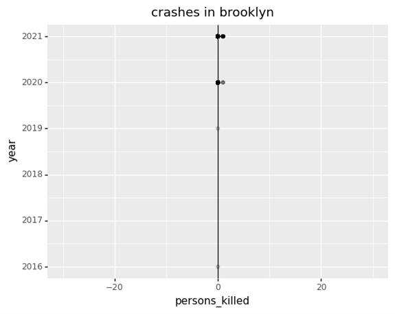

If you live in New York City and drive in your private car instead of public transport, you are more likely to have a car crash in Brooklyn than anywhere else in the city. Crashes in Brooklyn, have overshadowed those of Queens, Manhattan, Bronx and Staten Island in a latest dataset of citywide crashes between 2016 and 2021
Overall, average monthly crashes have also dropped across the city in 2021 compared to what it was five years ago, the yearly count for Brooklyn.
Although the number of monthly crashes has seen a consistent decline in New York City, over the period, crashes in Brooklyn on a yearly basis saw a marginal increase with the highest crashes recorded in 2021 against the lowest in 2016
One interesting fact is also that, despite a staggering 9,747 crashes recorded in 2021 alone compared to a single crash in 2016, the number of deaths from crashes have seen a consistent drop over the period.
The downward trend of deaths, reflects a recent trend as deaths from crashes have been falling since the 1960s, mainly due to improvements in vehicle designs and enforcement of speed limits on road through camera and laser technologies. Crashes and deaths begun rising post Covid pandemic, as increased aggression on the roads gradually started raising the figures from summer of 2020.